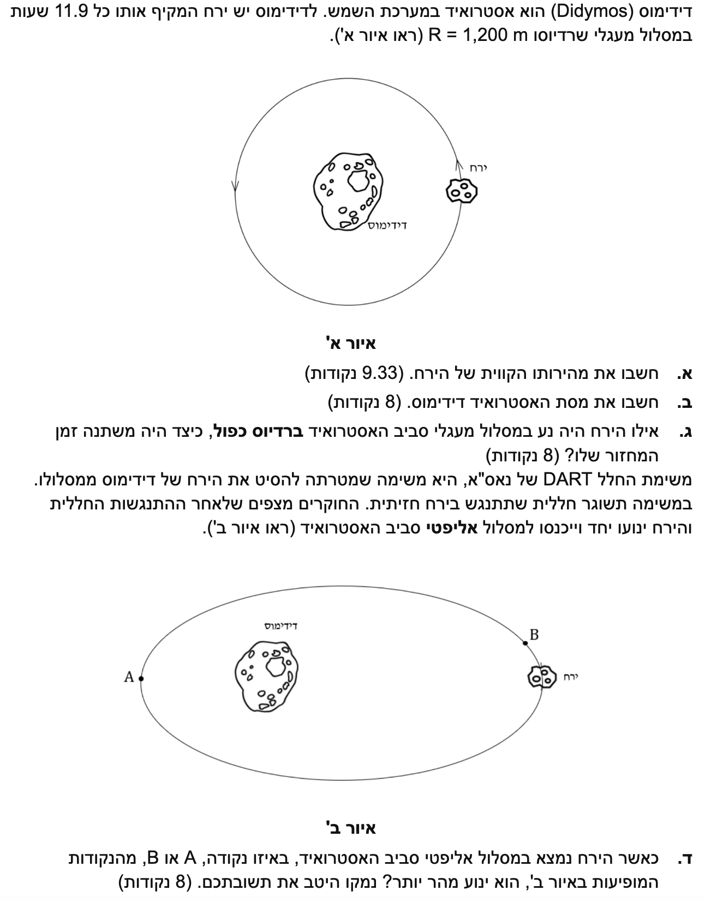

שלום תלמידים! לפנינו שאלת בגרות מרתקת העוסקת באסטרופיזיקה אמיתית - משימת DART של נאס"א להסטת אסטרואידים. נפרק את השאלה צעד אחר צעד, נקפיד על יחידות מידה תקניות ונבין את העקרונות הפיזיקליים העומדים מאחורי כל נוסחה. בואו נתחיל!

[תמונת השאלה המקורית]לא נמצאה תמונה בשם question-image.png באותה תיקייה.
סעיף א'
מה נתון:
לפני הכל, נסדר את הנתונים ונעביר אותם ליחידות המערכת הבינלאומית (MKS): מטרים, קילוגרמים ושניות.
זמן המחזור של הירח: \( T = 11.9 \text{ h} \). שעות אינן יחידה תקנית, לכן נמיר לשניות. בכל שעה יש 3,600 שניות, לכן:
\[ T = 11.9 \cdot 3,600 = 42,840 \text{ s} \]
מה מחפשים:
אנו מתבקשים לחשב את גודל מהירותו הקווית של הירח, כלומר את המהירות המשיקית במסלול המעגלי (\( v \)).
נוסחאות ועקרונות בשימוש: \( v = \frac{2\pi r}{T} \)
הצבה ופתרון:
נציב את הנתונים שסידרנו לתוך הנוסחה:
\[ v = \frac{2 \cdot \pi \cdot 1,200}{42,840} \]
\[ v \approx 0.17604 \text{ m/s} \]
נעגל את התשובה ל-3 ספרות מהותיות:
מסקנה: \( v = 0.176 \text{ m/s} \).
רגע של למידה:
זהו בדיוק אותו כוח כבידה שכבר פגשתם כאשר כתבתם ליד פני כדור הארץ \( F_g = mg \). שם הוא נראה כמו נוסחה "מיוחדת" רק מפני שמדובר במקרה מסוים מאוד: הגוף המרכזי הוא כדור הארץ, ואנו קרובים לפניו, ולכן \( g \) כמעט קבוע. אין כאן כוח חדש, אלא אותו כוח כבידה משמר שפועל גם על תפוח הנופל מן העץ, גם על הירח הסובב את כדור הארץ וגם על כוכבי הלכת הסובבים את השמש. במקרה הכללי מתארים אותו באמצעות הגוף המרכזי והמרחק ממנו, ולא רק באמצעות \( mg \).
סעיף ב'
תרשים כוחות עבור הירח. ציר הייחוס נקבע חיובי לכיוון מרכז המעגל.
מה נתון:
מהסעיף הקודם: \( v = 0.176 \text{ m/s} \) ו- \( R = 1,200 \text{ m} \).
מדף הנוסחאות נוציא את קבוע הגרביטציה האוניברסלי: \( G = 6.67 \cdot 10^{-11} \text{ N} \cdot \text{m}^2 / \text{kg}^2 \).
נסמן את מסת האסטרואיד (הגוף המרכזי) כ- \( M \), ואת מסת הירח כ- \( m \).
מה מחפשים:
אנו מתבקשים למצוא את מסת האסטרואיד דידימוס (\( M \)).
נוסחאות ועקרונות בשימוש: \( \Sigma F_R = m a_R \)\( F_G = G \frac{m_1 m_2}{r^2} \)\( a_R = \frac{v^2}{r} \)
הצבה ופתרון:
הכוח היחיד הפועל על הירח (בהזנחת כוכבים אחרים) הוא כוח הכבידה שהאסטרואיד מפעיל עליו, וכיוונו למרכז המעגל. נרשום את משוואת הכוחות לפי ציר רדיאלי חיובי פנימה:
\[ F_G = m a_R \]
\[ G \frac{M m}{R^2} = m \frac{v^2}{R} \]
ניתן לראות שמסת הירח \( m \) מצטמצמת משני צידי המשוואה. כמו כן, נכפול את שני האגפים ב- \( R \):
\[ G \frac{M}{R} = v^2 \]
נבודד את המסה של האסטרואיד \( M \):
\[ M = \frac{v^2 R}{G} \]
נציב את הנתונים המספריים:
\[ M = \frac{0.176^2 \cdot 1,200}{6.67 \cdot 10^{-11}} \]
\[ M \approx 5.572 \cdot 10^{11} \text{ kg} \]
נעגל את התשובה ל-3 ספרות מהותיות:
מסקנה: \( M = 5.57 \cdot 10^{11} \text{ kg} \).
טיפ מורה:
שימו לב שמסת הלוויין (במקרה שלנו, הירח \( m \)) הצטמצמה במשוואה! זוהי מסקנה חשובה מאוד בפיזיקה: התנועה הקינמטית של לוויין (מהירותו וזמן המחזור שלו) תלויה אך ורק ברדיוס המסלול ובמסת הגוף המרכזי אותו הוא מקיף, ואינה תלויה במסה של הלוויין עצמו.
בנוסף, זה מזכיר את מה שלמדנו על פני כדור הארץ: גם התאוצה הכבידתית \( g \) אינה תלויה במסת הגוף הנופל. כל גוף, קל או כבד, נמשך באותה תאוצה קבועה לעבר מרכז כדור הארץ, בלי קשר למסה שלו. זה אותו רעיון פיזיקלי של כוח כבידה ותאוצה שאינה תלויה במסה.
סעיף ג'
מה נתון:
רדיוס המסלול החדש גדול פי שניים מהרדיוס המקורי. נסמן: \( R_{new} = 2R \).
התנועה היא עדיין מעגלית סביב אותו גוף מרכזי (דידימוס).
מה מחפשים:
כיצד משתנה זמן המחזור של הירח? כלומר, עלינו למצוא את היחס בין זמן המחזור החדש (\( T_{new} \)) לזמן המחזור הישן (\( T \)).
נוסחאות ועקרונות בשימוש:
נוכל לפתח שוב את המשוואות, אך דרך אלגנטית ומהירה יותר היא להשתמש בחוק השלישי של קפלר הקושר בין זמן המחזור לרדיוס המסלול עבור גופים המקיפים את אותו מרכז כובד:
נעגל את התשובה ל-3 ספרות מהותיות (אפשר להציג בכתיב מדעי או להמיר חזרה לשעות: כ- \( 33.7 \text{ h} \)):
מסקנה: \( T_{new} = 1.21 \cdot 10^5 \text{ s} \).
אזהרת טעות נפוצה:
חוק קפלר השלישי מאפשר להשוות בין זמני ההקפה ורדיוסי המסלול רק כאשר שני הגופים מקיפים אותו גוף מרכזי בדיוק. לכן, מותר להציב בנוסחה רק בין שני מסלולים סביב אותו כוכב, ולא בין גופים שמקיפים מרכזים שונים. זו טעות נפוצה כי הנוסחה נראית כמו "נוסחת יחס", אבל מאחוריה מסתתרת הנחה פיזיקלית חשובה: אותו כוח כבידה ואותו מרכז מסה קובעים את הקשר.
סעיף ד'
מה נתון:
המסלול הוא אליפטי. על פי חוקי קפלר הראשונים, הגוף המרכזי (דידימוס) נמצא באחד ממוקדי האליפסה.
מתוך האיור ניתן לראות כי נקודה A רחוקה יותר מהאסטרואיד (אפואפסיס) ונקודה B קרובה יותר לאסטרואיד (פריאפסיס). כלומר: \( r_A > r_B \).
מה מחפשים:
לקבוע באיזו נקודה, A או B, גודל מהירותו של הירח גדול יותר ולנמק פיזיקלית.
נוסחאות ועקרונות בשימוש:
נשתמש בעקרון חוק שימור אנרגיה מכנית בקווי שדה כבידה. הכוח היחיד שמבצע עבודה על הירח הוא כוח הכבידה שהוא כוח משמר, ולכן האנרגיה המכנית הכוללת (\( E \)) נשמרת קבועה.
נרשום את חוק שימור האנרגיה בין נקודה כלשהי במסלול:
\[ E = \frac{1}{2}mv^2 - G\frac{Mm}{r} = \text{const} \]
נבחן את האנרגיה הפוטנציאלית הכובדית \( U_G \). שימו לב שיש לה סימן שלילי! כאשר המרחק \( r \) קטן (כמו בנקודה B), המנה \( G\frac{Mm}{r} \) גדלה, אך בגלל הסימן השלילי, הערך הכולל של הפוטנציאל הפוטנציאלי קטן יותר (הוא הופך להיות יותר שלילי).
מכיוון שהאנרגיה הכוללת \( E \) חייבת להישאר קבועה, ירידה באנרגיה הפוטנציאלית \( U_G \) חייבת להיות מלווה בעלייה באנרגיה הקינטית \( E_k \). במילים אחרות:
\[ E_k = E - U_G = E - \left(-G\frac{Mm}{r}\right) = E + G\frac{Mm}{r} \]
ככל ש- \( r \) קטן יותר, המונח החיובי גדול יותר ולכן \( E_k \) גדולה יותר. אנרגיה קינטית גדולה יותר משמעותה גודל מהירות גבוה יותר.
מכיוון שמרחק הירח בנקודה B קטן יותר מהמרחק בנקודה A (\( r_B < r_A \)), האנרגיה הפוטנציאלית ב-B קטנה יותר ולכן האנרגיה הקינטית ב-B גדולה יותר.
מסקנה: הירח נע מהר יותר בנקודה B.
דרך פתרון חלופית (מצוינת!): החוק השני של קפלר
ניתן לענות על סעיף זה בצורה אלגנטית ומילולית באמצעות החוק השני של קפלר. חוק זה קובע כי הרדיוס-וקטור המחבר את הגוף המרכזי והלוויין "מכסה" שטחים שווים בפרקי זמן שווים.
שטח הגזרה במרווח זמן קצר יחסי בקירוב למכפלת הרדיוס באורך הקשת שהלוויין עובר (\( \Delta A \approx \frac{1}{2} r \cdot \Delta s \)).
כאשר הירח קרוב לאסטרואיד (באזור נקודה B, שם הרדיוס קטן יותר), כדי "לפצות" על הרדיוס הקטן ולכסות את אותו השטח, עליו לעבור קשת גדולה יותר באותו פרק זמן. קשת גדולה יותר משמעותה מהירות קווית גדולה יותר!
טיפ מורה:
דרך אינטואיטיבית נוספת להסביר זאת היא באמצעות "עבודה ואנרגיה". כאשר הירח נע מנקודה A לנקודה B הוא מתקרב לאסטרואיד. כוח הכבידה מושך אותו פנימה, כלומר כיוון הכוח הוא בקירוב באותו כיוון של התנועה (הזווית ביניהם חדה). לכן כוח הכבידה עושה עבודה חיובית שגורמת לעלייה באנרגיה הקינטית ולכן גודל המהירות גדל.
נוסח השאלה המקורית
[תמונת השאלה המקורית]לא נמצאה תמונה בשם question-image.png.